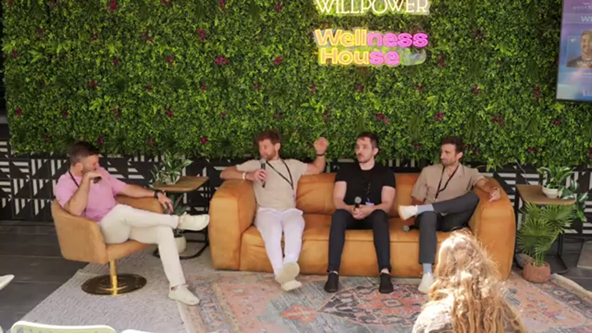

Salar could not find his people, so he built the app for it
Salar moved to the States 12 years ago and got told the way to make friends was bars and nightclubs.
That did nothing for him.
Run clubs did. Soccer, rock climbing, weekend gym sessions. High fiving total strangers before you know their names.
Three years ago he moved to Austin and hit the same wall. Where is this happening, and how do you find it?
Sweat Pals was the answer. The platform now powers over 10,000 communities and more than a million active users, handling event management, ticketing, membership and point of sale for everything from a passion-project run club to an operation like Squatch Fitness.
"If you don't have the community aspect, you're always on a treadmill. You always have to do paid marketing. Community is truly how you scale."
Salar, Co-founder, Sweat Pals
Eric's backyard: 5 to 10 people, six nights a week, since September
Eric of Muscle Mountain runs contrast therapy at his house in Austin. Sauna and cold water.
Since he moved in September he has averaged five to ten people a night, six nights a week.
That is roughly 1,200 people hosted in five months. Hosted, in his home, using the products he has on hand, doing the work together.
He caps groups at six to ten on purpose. "In a hot sauna, you get vulnerable really quick."
Your phone overheats, the defenses drop, and you are a person in a hot box with five others who chose to be there. Go past ten and the depth you can reach in 60 minutes falls off a cliff.
He also curates hard. Founders-only sessions for entrepreneurs, creators and investors, so the room adds value to itself.
Shared identity plus ritual. You need both
Salar pointed at Art of Community. A community is people gathered around a shared identity and shared experiences.
Identity on its own does nothing. The ritual is what makes it real.
Every time.
Religion works because people go on Sundays. The ritual is the calling card.
On his platform, Squatch Fitness runs a community workout the last Saturday of every month. That one consistent touchpoint is what manufactures belonging.
Show up once and you did a workout. Show up every month and you know people, they know you, you are in.
The events that actually build something combine a wellness piece with a curated social moment right after. Run and raves. Coffee and chill. An 80s themed volleyball night. A Taylor Swift lift club in Arizona (yes, really!).
The workout gets them in the room. The social part is why they come back.
Vivo Barefoot: 16 festivals, zero shoes sold
Nick joined Vivo Barefoot nine years ago, back when the team celebrated spotting someone wearing the shoes in public. The company grew 30% or better year on year for its first five years.
Then customers started organizing themselves without Vivo doing anything.
So they built a handmade wooden trailer and took it to 16 festivals across the UK, and decided up front they would not sell a single pair at any of them.
They were selling the experience of what Vivo is. Ambassadors ran talks, workshops, sound baths.
Website traffic climbed all summer, a build across the whole season rather than one spike, and the ROI was genuinely hard to put in a slide at the time.
It worked because they committed and refused to compromise the thing halfway through.
"The first event doesn't build community. It takes time. If you do it once and try to make it too transactional, it's never going to work."
Salar, Co-founder, Sweat PalsWhat brands keep getting wrong
Eric's answer: a fancy dinner buys you one nice evening and no content.
An ambassador summit with trail runs, climbing, CrossFit and cold stream plunges buys you content from every angle, live product feedback, and ambassadors who feel part of the thing. 10,000 did exactly that in Denver, 15 to 20 ambassadors over two to three days, and walked out with months of content and a team that understood the products better than any briefing.
Salar's answer: trying to sell the second someone walks in. "Instead of welcoming them and facilitating the connection, you're immediately trying to transact. That should always come last."
Nick's answer: you can run 100 events and move nothing if you tried to reach everybody at once. Pick your groups. Stay consistent with them. Get comfortable saying out loud what you are not doing yet.
What to take home
- Eric hosts 5 to 10 people six nights a week and calls it compounding consistency. 1,200 people in five months is the output. "It's not being superhuman any one day."
- Sweat Pals sees the strongest growth in events that fuse a workout with a social moment. The workout gets them in, the social part brings them back.
- Vivo's 16 festival summer with nothing for sale was their biggest marketing spend at the time. Direct sale ROI was zero. Brand equity and season-long traffic paid it back.
- Nick on entering a new city: partner with the community that already exists there. "If you're Klaviyo or Shopify and you want to get to Austin, you've got Willpower."
- Shared identity plus ritual equals community. The ritual is the part everybody skips, and it is the part that makes people belong. Growth Through Community.